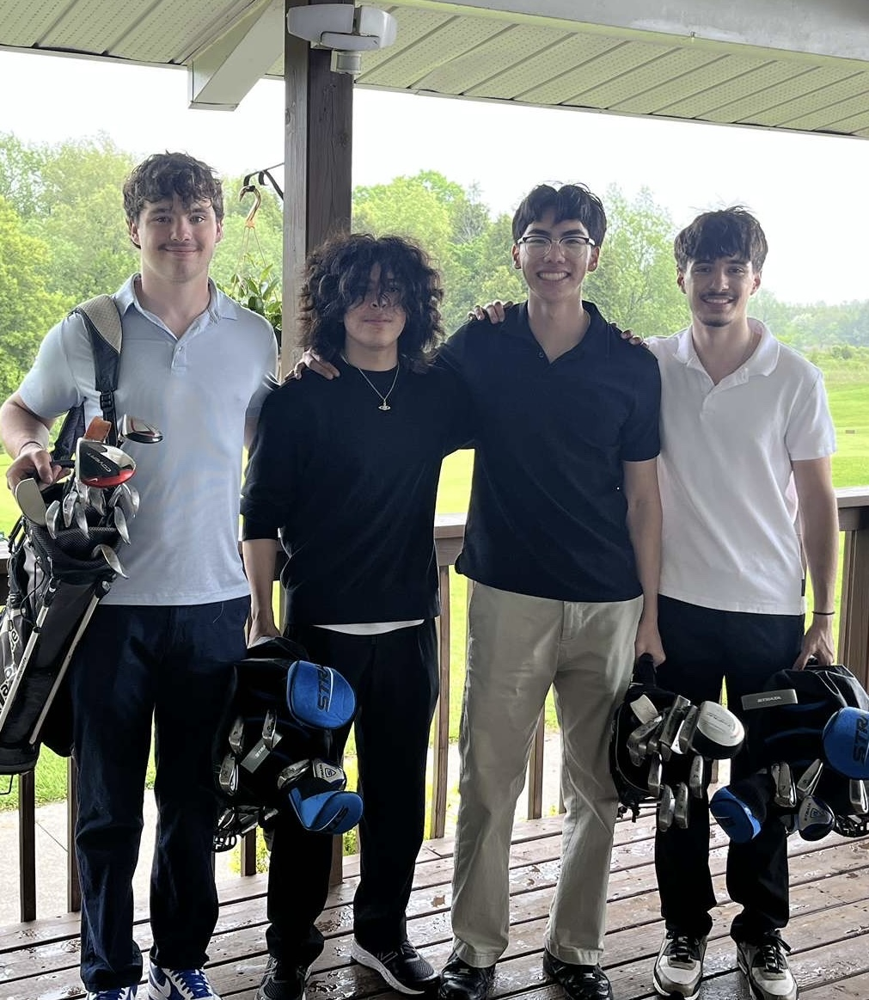

Strong enough
to speak up.
First-year cadet. A shared responsibility.
I'm raising funds for Movember because looking out for each other includes our mental health.

Francesco Zara.
A cadet. A cause.
I'm a first-year cadet at the Royal Military College of Canada, and this Movember, I'm raising money for men's health.
As I begin my journey in the Canadian Armed Forces, I want to help build a culture where taking care of our minds belongs alongside taking care of our bodies. Supporting the person beside us can begin with a simple conversation.
My campaign is about making space for those conversations—and supporting Movember's work in mental health and suicide prevention.
Behind every number,
there's a person.
November is a month to put men's health in focus. Through Movember, that includes mental health and suicide prevention, alongside prostate and testicular cancer.
Canada's suicide mortality rate is approximately three times higher among men than women.
Source: PHAC · National overview ↗Hospitalizations due to self-harm each year in Canada, including suicide attempts. All genders, ages 10 and older.
Source: PHAC · Annual estimate ↗Self-harm and suicide are related, but they are not the same. Self-harm can happen with or without suicidal intent. Hospitalizations capture only part of the picture. These national figures describe different measures and populations; they are not CAF-specific rates.
Explore Movember's mental health work ↗Looking out for
the person beside you.
From my perspective as a new cadet, service means learning to be someone others can rely on. I want that commitment to include listening, checking in, and encouraging people to seek support early.
The CAF's 2025 report recorded a suicide rate of 32.1 per 100,000 among male Regular Force members in 2024. A single year's rate can fluctuate, and it should not be used alone to compare military and civilian populations.
Read the DND report and its limitations ↗Ask how someone is doing. Give them time to answer, and listen without judgment.
A message, a walk, or a coffee can create space to talk. Check in again after the first conversation.
You don't need to have all the answers. Encourage professional support and offer to help find it.

Stand with me.
Stand for men's health.
Support my Movember fundraiser and help turn awareness into action. Every contribution—and every conversation—can help move men's health forward.
DONATE TO MY MOVEMBER PAGE ↗You don't have to face it alone.
If you're thinking about suicide or worried about someone, Canada's 9-8-8 Suicide Crisis Helpline offers phone and text support 24/7, in English and French.
Support within the CAF
Explore the CAF's mental health services and support options for military members and their families.
Find military mental health resources ↗